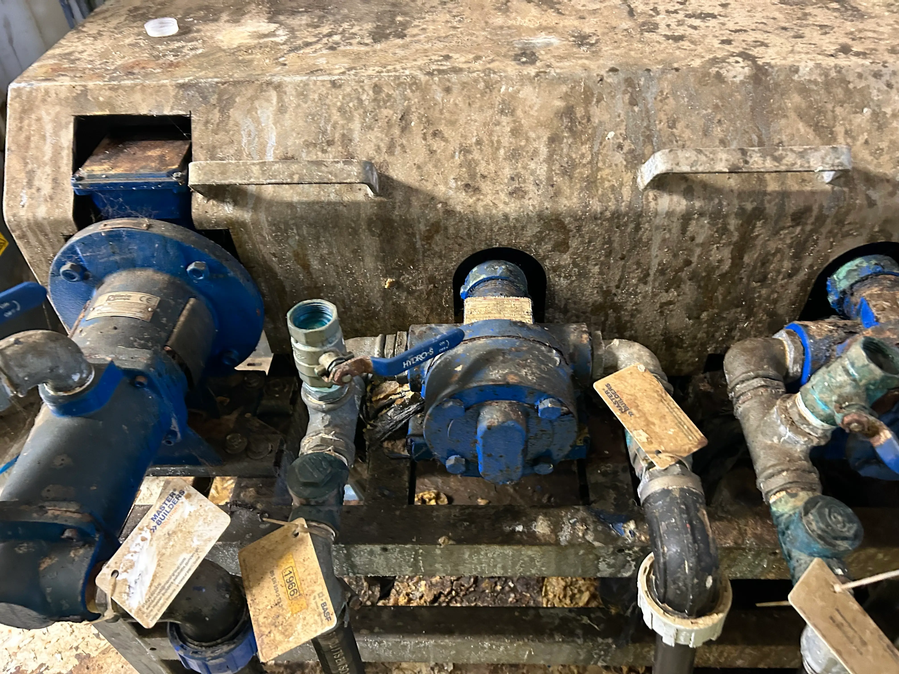

This page is for homeowners who want to speak directly with a local concrete shed base specialist. If you’re planning a shed, summerhouse, or garden structure, the quickest way to get started is by phone.
We confirm suitability, access, and pricing when you call.
When you call, we’ll quickly run through your project and confirm whether everything is suitable before moving forward.
Click the number above on mobile or desktop to call.
Calling or emailing and we'll confirm suitability for your property, calling is usually quicker but we try to respond to all email's as quick as possible, although sometimes it can get very busy.
You can send a short message for your shed base enquiry using the form below. Briefly describe your garden project or base size.
We focus on residential garden projects, so calls are handled locally rather than through a national office.
If we miss your call, we return it as soon as possible.
Most installations involve residential access, side passages, neighbouring properties, and timing coordination. A quick phone call lets us confirm whether your garden layout and project size are suitable before scheduling any work.
This avoids wasted visits and ensures your concrete base is planned properly from the start.
We’ll confirm your garden setup, answer your questions and provide a same-day quote where possible.
Click below to speak directly with a local Slough concrete shed base specialist.